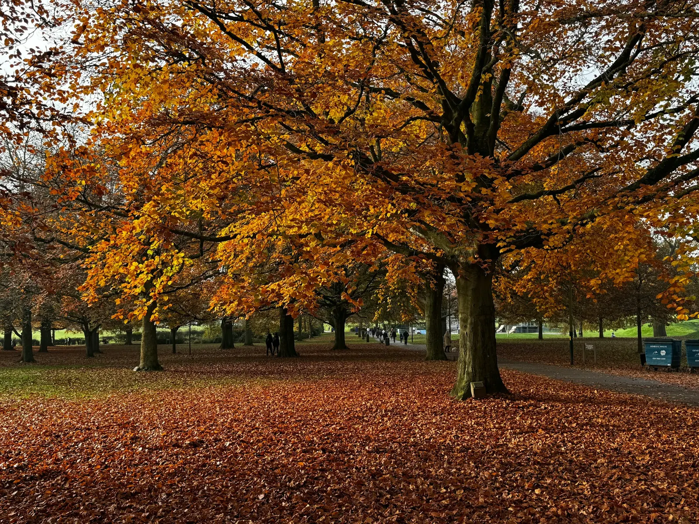

Walk guide
Ribchester Village Walk
Roman history in the Ribble Valley. A circular village walk that is fairly easy, with plenty of places for coffee and cake along the way.
Watch the video
The walk at a glance
Introduction
This is a detour from Lakeland Walking on the Level. It is not one of the book's walks.
Ribchester is a small village of under 2,000 people with a huge Roman history, in the heart of the Ribble Valley. It has lots of stone cottages from the 17th and 18th centuries on the edge of the River Ribble.
The walk is circular and fairly easy. There are plenty of places for coffee and cake along the way. Some paths were muddy and a grass slope was damp, so take care.
There is also a leaflet called Pilgrim's Walk that you can pick up at various places in the village. It covers everything I did on the walk.
The backstory
I was invited to Ribchester for the harvest festival inside the village hall, which was excellent.
When I got to the village hall, everybody was very friendly. Locals were selling their own arts, gifts, food and baking, with lots of arts and crafts and some cake stalls. I bought some sourdough bread. I also went to buy a focaccia, but a lady from a stationery stall wanted it, so I bought it and gave it to her.
What I remember best was a lady by the stage selling what looked like paintings. When I got up close, they were made of pulled wool, and they looked like fantastic artwork. Six ladies get together every Thursday as a hobby group to make them.
I filmed the walk over three separate weekends: 10, 17 and 24 October.
On the first visit I filmed on my original phone. When I got home, the footage was mushy, so I went back on the second visit and recorded it again, with a lot of pieces to camera, using new kit.
On the third visit I went back because, when I was editing, I did not have enough B-roll. That one was very relaxed. I was not doing any pieces to camera, just filming the scenery and enjoying the walk myself.
I took my time on each visit because I stopped at Stydd Gardens and had brunch on all three occasions, which was lovely. I ate in the Croft twice and in the Glasshouse once.
The walk
I parked the van in the Ribchester Arms car park, went out of the back of the car park through the hedge, and walked up the lane towards the church.
The first stop is St Peter and St Paul Catholic Church, which was built in 1789. Strolling around the church grounds is really relaxing. There is a bench where I sat and recharged while I wrote my journal and made some notes. I had the sunshine on my face and could hear the birds singing, and it was very relaxing.
It always surprises me when I visit a church and walk through the cemetery. I look at the age of some of the gravestones and wonder about the stories those people could have told.
Right next to the church is a beautiful building, which I think belongs to the church. It has an elegant staircase that goes up to the first floor. These are apartments. Unfortunately you can't buy one, but I do believe you can rent one. I will certainly investigate, because I would love to rent one in the future for a nice weekend away in the quiet countryside.
From there I went on to St Saviour's Church at Stydd. It is about 800 years old and one of the oldest churches in Britain still in use.
St Saviour's is a small church just outside Ribchester. It is still in use and Grade I listed. The Knights Hospitaller held the site from about 1265, and the building dates from the 12th or 13th century. Local tradition says Margaret Clitherow, a Catholic martyr from York, may be buried here, but this is tradition and not proven.
Leaving St Saviour's, you come down and walk across the fields. There is a slight slope, but you are heading towards the wooden bridge that goes across the stream, and from there you can head towards Stydd Gardens. There is another fence and a stile to go over, which I found muddy and a bit slippery on the day.
Stydd Gardens is a beautiful local garden and well worth a visit. It has places for breakfast, brunch and lunch. I was there in autumn and the browns and reds were beautiful. There are doves in the garden, and I loved the sound of them cooing. You could hear other birds too.
On my first visit I went into the Croft for a coffee and had poached egg on toast. Other people arrived in the cafe and everybody was so nice and chatty. Somebody else got scones, cream and jam, so I decided to push the boat out and get the same for myself. On my second visit I had a coffee and a toasted teacake. On my third visit I met a good friend and we had lunch in the Glasshouse.
Once you leave Stydd Gardens, walk down Ribblesdale Road and turn left to go to Greenside. I went this way because of the Ribchester New Hotel building, which I believe now has its bedrooms downstairs and the lounge upstairs. It is next to the Ribchester Arms, where I started, so if you want to cut the walk short, you could finish there.
I recommend going down Greenside, with its lovely 17th and 18th century cottages. You can hear the stream and the river nearby. You come to a cobbled area, which is the entrance to the car park, with signs for the Roman Baths. You can follow these signs, but if you go through the car park you will arrive at the memorial.
The memorial and bench are easy to miss, but they are a good spot for a flask and sandwiches. After that, a path takes you down towards the river and the stream.
The Roman Bathhouse is next. The sign says it fell into disuse about 225 AD, and it is not clear whether it was deliberately demolished or left to decay.
This was a great place for me to experiment with my drone, which is why I am staring at it as it does a circle. My intention was to give you a 360 degree view of the bathhouse, but I had only just got the drone and did not know how to do that, so it just circled me. I left in the bit where I trip up the steps and the bit where I slip in the mud on the way out. I find it funny watching the video back, but I hope it also shows you to wear good footwear and take care, because it can be slippy if it has rained.
I left the Roman Bathhouse by going back down the steps and along the stream to the River Ribble, which has spectacular views. There are benches there where you can rest once again, get your flask and sandwiches out and watch the River Ribble go by.
After the benches you come to the rectory. Just a little bit further is the Roman Museum, which was built in 1914. On the day I visited it was closed, although the door was open. It is open Monday to Friday all year round, and also on Sundays from 11 to 5.30 in June, July and August, so please check the opening times before you go.
At the village hall I headed for St Wilfrid's churchyard. It is beautiful, one of those places where you can just wander around and take in the ambience. The church is set inside the Roman fort, and I was surprised to learn that the Roman fort walls would have gone round St Wilfrid's Church. In the fields behind it, Time Team dug trenches and found there had been more than one fort on the site.
Just round the corner are the Roman Granaries, which are easy to miss. One of the locals guided me there on the harvest festival day. They were the grain store for the garrison. In the video I say they were guarded 24 hours a day and had enough food for the whole village for 18 months, but that was unscripted and I had not read the sign yet. When I did, it said the granaries were there to feed the garrison for 12 months.
The video is not in the exact order I walked it. On my second visit I turned right at the village hall and went to the granaries. My piece to camera, which was not scripted, says I am going to walk into the church, but on the day I did not go in. When I edited the video, it made more sense in a slightly different order.
My last stop was the White Bull. It has a plaque dated 1707, but all I do in the video is announce that, which is stating the obvious. It made me realise I need to script my videos from now on. The pillars are the original ones, and on the Time Team programme it was suggested they could actually be from Roman times and were reused as the entrance to the courthouse. The steps outside were used for daily announcements.
The White Bull is now a lovely pub. I want to go in one day and maybe have a nice pub lunch, which I hope to do when I visit again next year.
I filmed this stop on my first visit with my original phone, so the footage in the video is quite mushy. I plan to refilm the whole walk around Ribchester next year, in spring or summer.
A chat with a villager
On my third visit, while I was outside the White Bull, a villager asked me what I was doing. I said I'm learning to present, film and edit as a new hobby, and that I'd love to move to Ribchester. That is the reason I did not get any more footage of the White Bull, because I was having a really good conversation with one of the locals. People in Ribchester are just so friendly.
They pointed out a three-bedroom house opposite theirs at £325,000. That is way out of my budget, so I won't be moving anytime soon, but I would love to.
What I learned
I need to plan better. That includes researching the location before I go, and how I show locations in the video. I have visited Scout Scar near Kendal, which is a walk in Lakeland Walking on the Level by Norman Buckley, but I need to go back to get more footage and record it properly with better kit instead of my phone. My van is off the road, so I can't do that straight away.
I definitely need to script my videos. I also need to work out how to use a teleprompter, probably on my old phone.
I need to plan my shots so I do not have to keep returning to a location. I should also get more B-roll on the first visit.
What I really want is to get fitter and walk more. Presenting, filming and editing is my reason to go on these walks, and I probably would not go on them if I did not have one.
The video
One last thing
On the last day, when I came back to the van after getting all the B-roll, the engine light was on. I did not notice it at first and set off from the car park. When I did notice it, I had not gone far, so I went back to the car park.
I checked the engine oil level, had a look around the engine bay and ran the engine in the car park to see if any smoke was coming out of the exhaust. I did a bit of research online and found it could be a sensor or a glow plug.
I drove home slowly on B-roads. I set my navigation to avoid the motorway, because if I broke down on a B-road I could park at the side of the road and get an Uber or a taxi home. The van drove perfectly and I got home with no problem at all, although it took me 2 hours.
The garage has since confirmed it is to do with the glow plugs and some parts around them. I have just been told that when they tried to take a glow plug out, it snapped. They now have to strip down a big part of the engine, taking the radiator and cooling system apart to get to it. So I will be without the van for a few weeks. If the weather looks okay, my next walk will be next week, by train.